Válvulas industriais
Fornecimento, automação e manutenção de borboleta bi‑excêntrica, gaveta, globo e retenção para usinas e indústrias de todo o Brasil.
Sertãozinho/SP · atendimento em todo o território nacional
Quem somos
A NEW nasceu em Sertãozinho, no coração do setor sucroenergético, com uma equipe que soma 24 anos de experiência em válvulas industriais. Fabricamos, fornecemos, automatizamos e recuperamos válvulas para usinas, estações de tratamento, mineradoras, papel e celulose e petroquímica, com responsabilidade técnica registrada no CREA-SP.
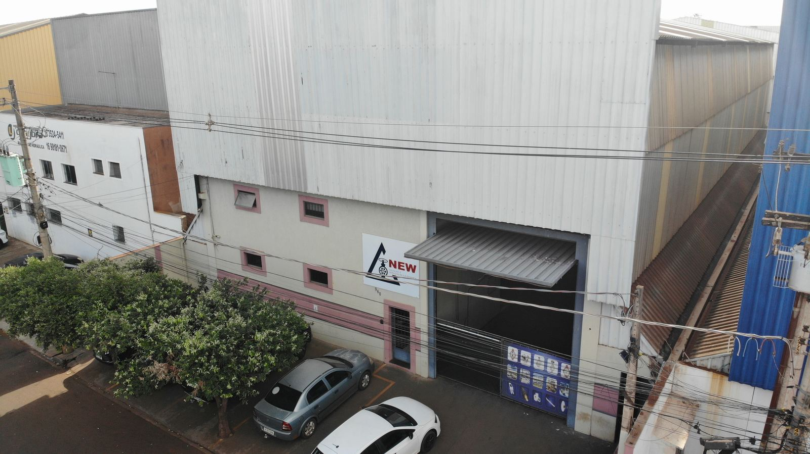
Nossa missão: garantir confiabilidade e eficiência nas operações industriais, com válvulas de alta performance, suporte técnico ágil e atendimento transparente.
Válvulas para serviço pesado
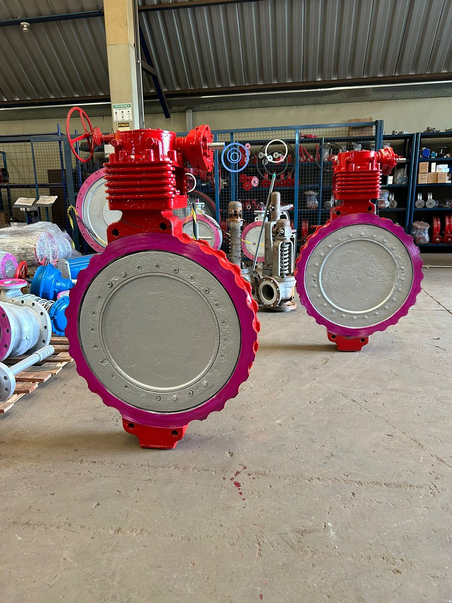
Classe 150
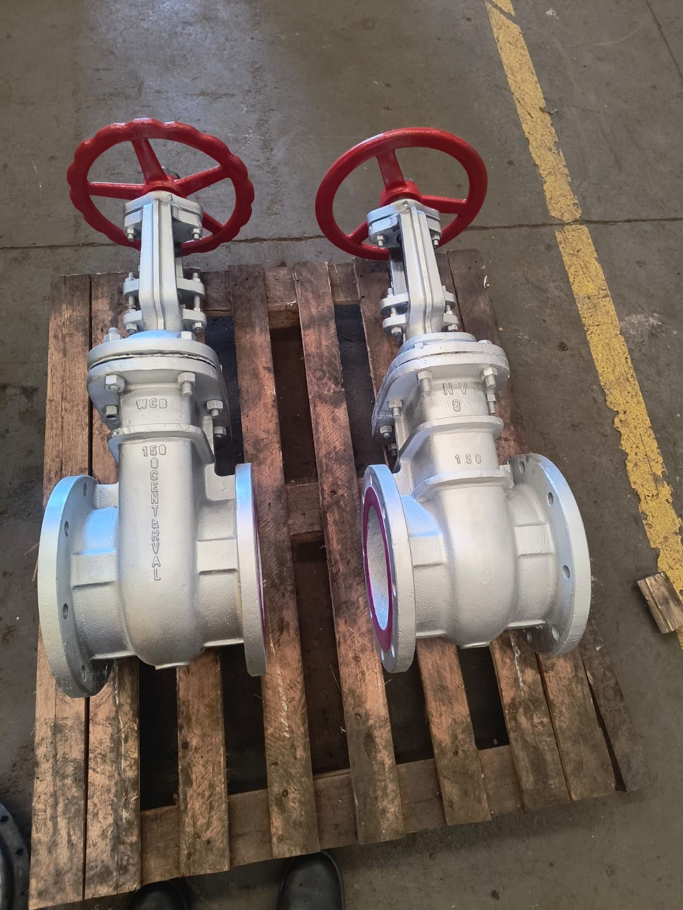
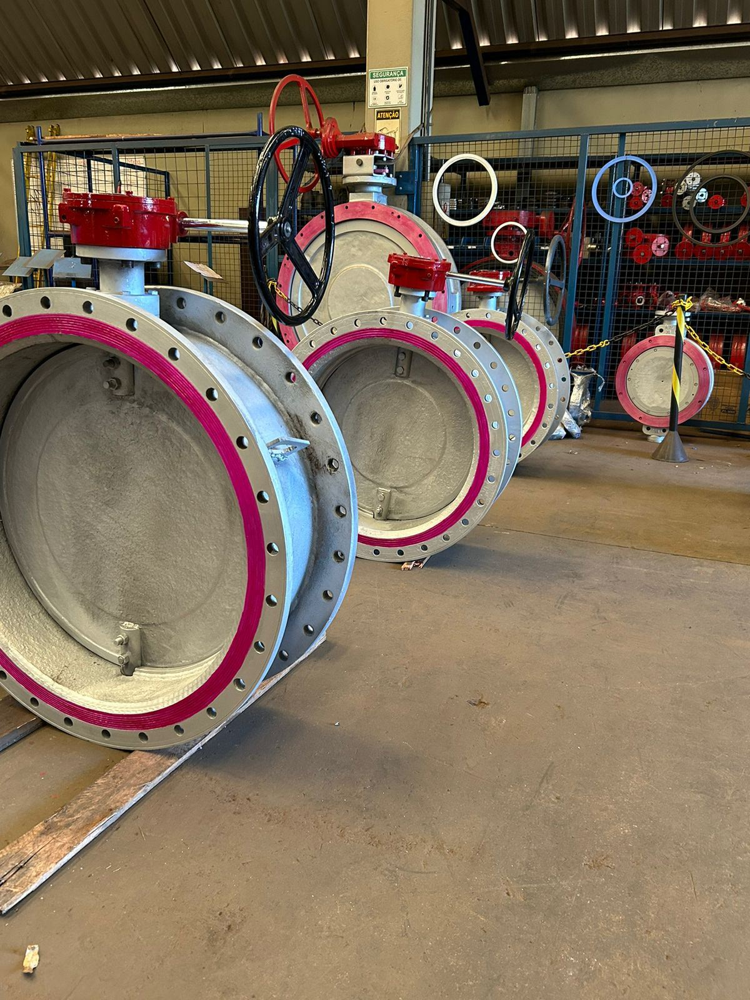
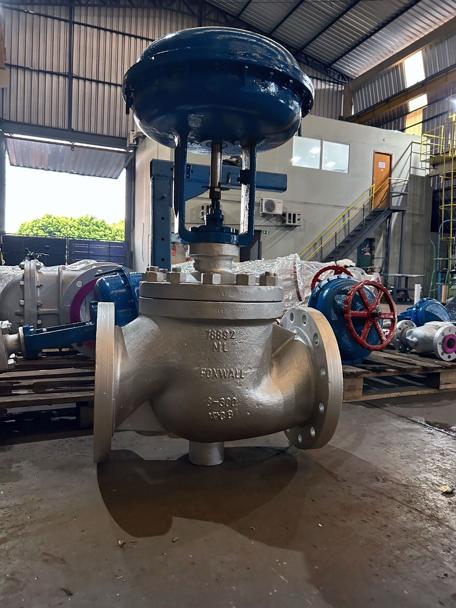
Borboleta, gaveta, globo e retenção, do fornecimento à automação.
Catálogo
Borboleta bi-excêntrica Classe 150
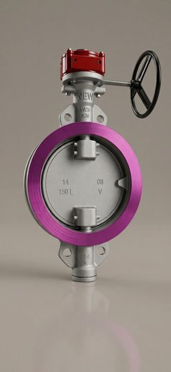
Dupla excentricidade, sede em RPTFE reforçado com fibra de vidro e projeto conforme API 609 Categoria B. Estanqueidade bubble tight no ensaio API 598.
- Diâmetros
- 2" a 48" (DN 50 a 1200)
- Classe de pressão
- ASME 150
- Extremidades
- Semi-lug
- Temperatura
- até 250 °C contínuo
- Corpo e disco
- WCB, ferro nodular, CF8, CF8M, CF3
- Sede
- RPTFE
Borboleta concêntrica
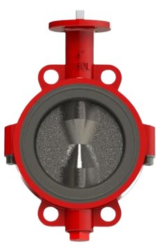
Tipo wafer e semi-lug, construção conforme API 609.
- Monobloco
- 2" a 40"
- Bipartida
- 2" a 24"
- Corpo e disco
- Ferro nodular, aço-carbono ou inox
- Eixo
- AISI 410, 304 ou 316
Retenção wafer
Evita refluxo em sistemas de bombeamento e processo: químicos, vapor, óleo e água.
- Diâmetros
- 2" a 40"
- Classe de pressão
- ASME 150
- Temperatura
- 10 °C a 400 °C
- Corpo
- Ferro fundido, aço-carbono, inox
- Sede
- EPDM, Buna, Viton, metal
Gaveta e globo
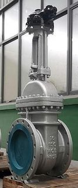
Montagem entre flanges, para linhas de vapor, água e processo.
- Classes de pressão
- 150, 300, 600, 900 e 1.500
- Fundidos
- WCB, WC6, WC9, C12A, CA15
- Acionamento
- Volante, caixa de redução, elétrico ou hidráulico
Pressure seal
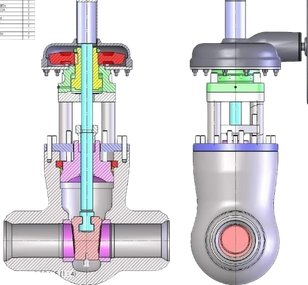
Castelo com vedação por pressão, para alta pressão e alta temperatura.
- Classes de pressão
- 150, 300, 600, 900 e 1.500
- Fundidos
- WCB, WC6, WC9, C12A, CA15
- Acionamento
- Volante, caixa de redução, elétrico ou hidráulico
Esfera segmentada
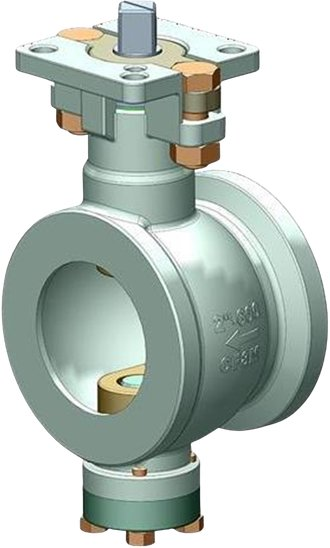
Controle e bloqueio com vedação estanque Classe VI.
- Corpo e esfera
- Inox ASTM A351 CF8 ou CF8M
- Eixo
- ASTM A276 tipo 316 ou 410
- Vedação
- PTFE, RPTFE, AISI 304 ou 316
- Acionamento
- Manual, pneumático, diafragma ou elétrico
Guilhotina
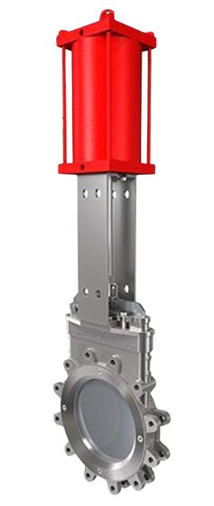
Para sólidos em suspensão, massas, pastas e pós: alimentício, saneamento, papel e celulose, petroquímica e mineração.
- Diâmetros
- 2" a 30"
- Vedação
- Unidirecional ou bidirecional, em inox
- Materiais
- Ferro nodular, CF8, CF8M
Atuador pneumático
Simples ou dupla ação, padrão ISO 5211 e NAMUR.
- Torque
- até 12.992 Nm
- Pressão de ar
- 3,0 a 8,0 bar
- Temperatura
- -20 °C a +80 °C
- Corpo
- Alumínio anodizado ou epóxi
Posicionador pneumático
Para atuadores de simples e dupla ação, com carcaça robusta para ambientes agressivos.
- Sinal
- 4 a 20 mA
- Carcaça
- Alumínio fundido
- Indicação
- Indicador de posição de alta visibilidade
Solenoide NAMUR 5/2 vias
Comando direcional para atuadores pneumáticos de dupla ação, com montagem direta.
- Tensão
- 24 Vcc
- Proteção
- IP65, conector DIN 43650
- Corpo
- Alumínio
Caixa redutora
Acionamento manual de válvulas de grande porte.
- Torque
- até 8.000 Nm
- Flange
- ISO 5211
- Proteção
- IP65, corpo em ferro fundido
- Volante
- Aço ou alumínio
Também atendemos gaveta, globo e retenção de 150# a 1.500#, borboletas de 150# a 300# de 2" a 72", válvulas de controle e segurança, corta-chamas e angulares.
Bi‑excêntrica Classe 150
Válvula borboleta de dupla excentricidade, fabricada em aço carbono WCB, ferro nodular ou aço inoxidável (CF8, CF8M, CF3), com sede em RPTFE reforçado com fibra de vidro. Projeto conforme API 609 Categoria B, para vapor, caldo, xarope, etanol, óleo térmico e limpeza CIP.
Baixar boletim técnico (PDF)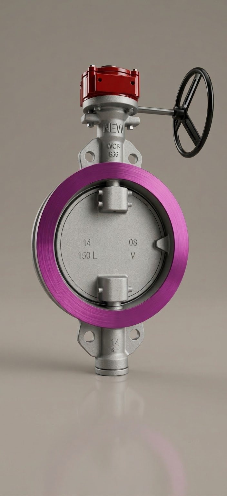
- Diâmetros
- 2" a 48"
- Classe de pressão
- ASME 150
- Temperatura contínua
- até 250 °C
- Projeto
- API 609 B
- Estanqueidade
- Bubble tight
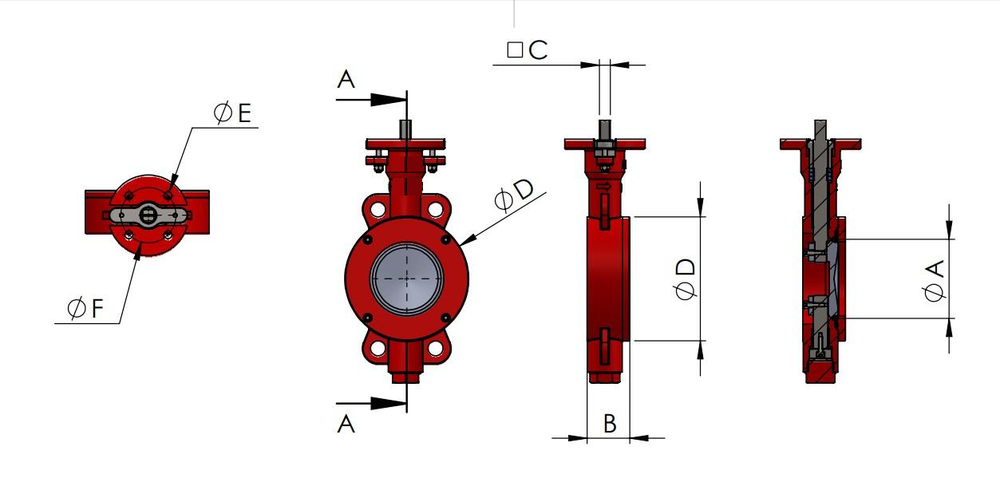
Dimensões por bitola, em mm
DN 200
- ØA passagem
- 182
- B face a face
- 64
- □C quadrado da haste
- 22
- ØD externo do corpo
- 270
- ØE furos do acoplamento
- 12,7
- ØF círculo de furação
- 102
- Nº de furos
- 4
- Flange ISO 5211
- F10
Ver todas as bitolas em tabela
| Bitola | DN | ØA | B | □C | ØD | ØE | ØF | Furos | ISO 5211 |
|---|---|---|---|---|---|---|---|---|---|
| 2" | 50 | 52 | 45,5 | 11 | 100 | 10 | 70 | 4 | F07 |
| 2½" | 65 | 62,6 | 48 | 11 | 110 | 10 | 70 | 4 | F07 |
| 3" | 80 | 74 | 48 | 11 | 127 | 10 | 70 | 4 | F07 |
| 4" | 100 | 96 | 54 | 14 | 157 | 10 | 70 | 4 | F07 |
| 6" | 150 | 144 | 57 | 17 | 216 | 10 | 70 | 4 | F07 |
| 8" | 200 | 182 | 64 | 22 | 270 | 12,7 | 102 | 4 | F10 |
| 10" | 250 | 237 | 71 | 22 | 325 | 12,7 | 102 | 4 | F10 |
| 12" | 300 | 284 | 81 | 27 | 380 | 14 | 125 | 4 | F12 |
| 14" | 350 | 320 | 92 | 27 | 420 | 14 | 125 | 4 | F12 |
| 18" | 450 | 396 | 114 | 36 | 534 | 18 | 140 | 4 | F14 |
| 20" | 500 | 456 | 127 | 46 | 580 | 20 | 165 | 4 | F16 |
| 24" | 600 | 546 | 154 | 46 | 696 | 22 | 165 | 4 | F16 |
| 28" | 700 | 632 | 164 | 46 | 804 | 18 | 254 | 8 | F25 |
| 30" | 750 | 698,5 | 165 | 55 | 840 | 18 | 254 | 8 | F25 |
| 32" | 800 | 735 | 190 | 55 | 900 | 18 | 254 | 8 | F25 |
| 36" | 900 | 850,9 | 216 | 55 | 1022 | 18 | 254 | 8 | F25 |
| 40" | 1000 | 952 | 240 | 75 | 1120 | 22 | 298 | 8 | F30 |
| 44" | 1100 | 1054 | 260 | 75 | 1250 | 22 | 298 | 8 | F30 |
| 48" | 1200 | 1120 | 270 | 75 | 1380 | 22 | 298 | 8 | F30 |
Dimensões em milímetros. Face a face (B) conforme API 609, Tabela 3a (2½" a 24", tolerância ±3,3 mm); 2" e 28" a 48" no padrão do fabricante, como a norma permite. Diâmetros não listados, como 16", e dimensões certificadas sob consulta.
Limites operacionais
| Temperatura | WCB | CF8/CF3 | CF8M |
|---|---|---|---|
| 38 °C | 20,0 | 19,4 | 19,4 |
| 100 °C | 18,0 | 16,0 | 16,5 |
| 150 °C | 16,1 | 14,5 | 15,1 |
| 200 °C | 14,1 | 13,5 | 14,0 |
| 250 °C | 12,3 | 12,3 | 12,3 |
| 300 °C (pico) | 10,4 | 10,4 | 10,4 |
Ferro nodular: ASME B16.42, máximo de 17,5 kgf/cm² (17,2 bar) a 38 °C. Vale sempre o menor limite entre corpo e sede; em temperatura elevada, opere com margem de segurança.
Configuração construtiva
| Componente | Materiais disponíveis |
|---|---|
| Corpo | WCB, ferro nodular, CF8, CF8M, CF3 |
| Disco | WCB, ferro nodular, CF8, CF8M, CF3 |
| Haste | WCB, ferro nodular, CF8, CF8M, CF3 |
| Buchas | Bronze, WCB, ferro nodular, CF8, CF8M, CF3 |
| Sede | RPTFE (PTFE reforçado com fibra de vidro) |
| Gaxeta | Carbono e grafite |
WCB: ASTM A216 Gr. WCB. CF8, CF8M e CF3: ASTM A351, equivalentes a AISI 304, 316 e 304L. A combinação é definida pelo fluido, pela temperatura e pela especificação do cliente.
Normas de referência
- API 609
- Projeto, Categoria B
- API 598
- Inspeção e ensaios
- ASME B16.34
- P × T, aço e inox
- ASME B16.42
- P × T, ferro nodular
- ASME B16.5
- Furação 2" a 24"
- ASME B16.47
- Furação 26" a 48"
- ISO 5211
- Acoplamento do atuador
- ASTM A216 / A351
- Materiais fundidos
Onde aplicar
| Serviço | Condição | Status |
|---|---|---|
| Vapor saturado | Até ≈ 13–14 kgf/cm² e 195 °C | Indicada |
| Caldo bruto, clarificado e filtrado | Evitar alto teor de areia | Indicada |
| Xarope e mel final | Dentro da curva P × T | Indicada |
| Etanol e derivados | Dentro da curva P × T | Indicada |
| Óleo térmico | Até 250 °C contínuo; confirmar exigência de fire-safe | Com restrição |
| Fluidos com sólidos abrasivos | Desgaste acelerado da sede | Não recomendada |
| Serviço fire-safe certificado | Válvula sem certificação API 607 | Não recomendada |
| Operação contínua acima de 250 °C | Limite térmico da sede RPTFE | Não recomendada |
| Fluido | Condição típica | Corpo, disco, haste e buchas | Status |
|---|---|---|---|
| Óleo | Óleo de milho ou térmico, até 250 °C | WCB, ferro nodular, CF8, CF8M, CF3 | Indicada |
| Xarope | Vinhaça concentrada, levemente ácida (pH ≈ 4), quente | CF8, CF8M, CF3 | Indicada |
| Soda cáustica | CIP alcalino, diluída, até ≈ 90 °C | WCB, ferro nodular, CF8, CF8M, CF3 | Indicada |
| Ácido sulfâmico | Desincrustação de evaporadores, diluído | CF8M, CF8, CF3 | Somente inox |
| Ácido nítrico (CIP ácido) | pH 1 a 3, 0,5 a 2 % | CF3, CF8, CF8M | Somente inox |
| CIP alternado ácido e soda | A mesma linha recebe os dois ciclos | CF8M, CF3 | Somente inox |
WCB e ferro nodular não devem ser aplicados em contato com ácidos. Sede RPTFE e gaxeta de carbono e grafite são compatíveis com todos os fluidos acima. Ácido sulfâmico: limitar a ≈ 60 °C. A seleção final deve considerar as condições reais de operação; consulte a NEW para aplicações fora destes limites.
Clientes e segmentos
Quem já trabalha com a NEW
- Usina Caeté
- Usina São Francisco
- Usina Santa Isabel
- Usina Santa Clotilde
- Usina Santa Fé
- Usina Branco Peres
- Usina Caçu
- Energética Serranópolis
- ADM do Brasil
- Ball
- Usiminas
- Fiber Citrus
- Comigo
- Icofort
- Agimix
- Agropecuária Terra Nobre
- Ativineo
- CT Consultoria
Segmentos atendidos
- Usinas de açúcar e etanol
- Plantas de etanol de milho
- Tratamento de água e efluentes
- Mineração e siderurgia
- Papel e celulose
- Petróleo e petroquímica
- Alimentício
Manutenção com rastreabilidade
Manutenção preventiva e corretiva, inspeção, diagnóstico e recondicionamento. Cada válvula que chega ao barracão é conferida, avaliada e recuperada conforme a especificação original, com laudo fotográfico antes, durante e depois do reparo. Atendemos no barracão ou em campo.
Montagens industriais
Da preparação à instalação final: válvulas e atuadores, tubulações industriais e comissionamento, com equipe técnica em campo.
Caldeiraria e fabricação
Caldeiraria especializada, suportes, flanges, peças usinadas sob encomenda e subconjuntos sob medida.
Logística
Frota própria e transportadoras parceiras, com equipe treinada e uniformizada. Entregas na Grande São Paulo, Sertãozinho e Ribeirão Preto, São José do Rio Preto, Sul de Minas e Triângulo Mineiro.
Ordem de serviço
Na chegada
Recebimento e conferêncialistagem completa
Na bancada
Desmontagem e avaliaçãorelatório técnico
Registro de cada componentelaudo fotográfico
No reparo
Recuperação e usinagemespecificação original
Montagem finalbarracão ou campo
Válvula pronta para operarcom documentação
Estrutura e estoque
Estoque de válvulas prontas para entrega e bancada própria de manutenção e usinagem.


Contato
NEW Service Equipamentos
Rua Argentina Grillo Badia, 960Sertãozinho/SP · 14176-113
(16) 99722-3976 comercial@newequipamentos.ind.brPedir orçamento
Conte o que precisa. O pedido abre no WhatsApp da NEW, já preenchido, e você confere antes de enviar.